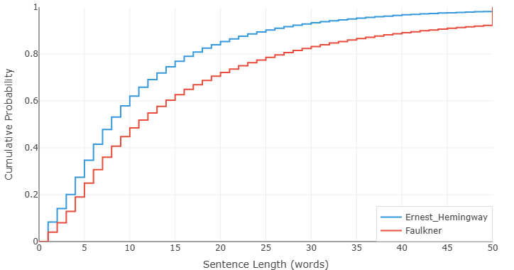

海明威 vs 福克纳 — 数据到底说了什么
随便找个人问问，哪两位作家最能代表英语散文的两个极端，答案几乎总是一样的：欧内斯特·海明威和威廉·福克纳。
海明威：简洁的大师。短句。朴素的词。"冰山理论"——删掉一切，让未说出口的部分承载重量。用他自己的话说，他的文风是被《堪萨斯城星报》的风格手册塑造出来的："用短句。用简短的开头段落。用有力的英语。"
福克纳：极繁主义者。句子在半页纸上盘旋缠绕，从句套着从句，拒绝落地，直到思绪把自己耗尽。在《押沙龙，押沙龙！》中，一个句子长达1288个词。评论家说他不可读；他说这是必要的。意识流需要呼吸的空间。
所有人都"知道"这两位是对立面。但如果你不再依赖文学界的口碑，而是真正去测量其中的差异呢？我们把两位作家的代表性文本分别输入写作风格分析器。结果既完全在预料之中——又令人大吃一惊。
图一：句子长度的鸿沟

这张图展示的是句子长度的累积分布。X 轴是句子长度（以词数计），Y 轴表示有多少比例的句子落在该长度或更短。曲线快速上升、紧贴左边缘，意味着短句占主导。曲线向右拖沓，则意味着作者喜欢把句子拉长。
海明威的曲线是那条快速上升的——两条线之间的差距触目惊心。
在 17 个词这个节点上，海明威已经覆盖了80% 的句子。而福克纳，同样的阈值只覆盖了略多于 60%。想想看：海明威五句中有四句在 18 个词之前就收尾了。福克纳需要几乎两倍的篇幅才能覆盖同样的比例。
但真正让人瞠目结舌的是图表的右端。看 50 个词那个位置。到这个点，海明威基本已经穷尽——他写的几乎每一个句子都已经被统计在内。而福克纳的曲线呢，在 50 个词处只达到了92%。这意味着福克纳有 8% 的句子超过了 50 个词。
这里有一个关键细节：我们的句子切分器刻意倾向于碎片化。为了研究节奏，我们会按逗号切分——不仅是句号、感叹号和问号。你在图表上看到的单位，并不是语法教科书意义上的完整句子，而是呼吸单元——读者在两次停顿之间所处理的那一组词。
所以当图表显示福克纳有 8% 的"句子"超过 50 个词时，它真正的含义是：你在读福克纳时，大约每呼吸十二次，就有一次会在不停顿的情况下连续处理超过五十个词。如果你在朗读，这对肺活量是相当大的考验。相比之下，海明威几乎每次停顿都给你喘息的机会。
这不只是风格癖好，这是对"阅读应该是什么感觉"的根本不同的理解。海明威想让你快速前进，感受词与词之间的沉默。福克纳想让你沉入其中，迷失方向，被意识的洪流裹挟，直到忘记自己从哪里出发。数据不会说谎：两个人都精确地得到了他们想要的效果。
图二：词汇的惊喜

看到句子长度曲线差这么多，你会自然而然地预期词汇频率曲线也同样天差地别，对吧？一个用朴素的语言，一个以晦涩著称——他们的词汇曲线应该是完全不同的世界。
不是的。它们几乎一模一样。
这张图绘制的是累积词频——文本中落入英语最常用 N 个词（基于 COCA 语料库的 4380 个词排名）的所有词所占的比例。曲线紧贴左边缘，意味着作者严重依赖常见词汇。曲线滞后，则意味着作者更频繁地使用生僻词。
在头 300 个最常用的词中，海明威使用高频词的比例略高一些——他的曲线上升得稍快一点。这符合我们对海明威的印象："用有力的英语"——常见、强硬、具体的词。
但在过了头 300 个词之后呢？两条曲线几乎完全重叠。穿过中频词区域，穿过更生僻的词汇，一直到长尾——海明威和福克纳从同一口井里打水。他们的词汇范围、他们对生僻词的偏好、他们在熟悉与陌生之间拿捏的平衡——全都惊人地相似。
这真的令人惊讶。这两位作家以彼此对立而闻名。一位在每本"写作要清晰"的教材里被奉为典范；另一位则是艰涩文风的代言人。然而，在词汇层面，他们几乎在用同一副牌打牌。区别不在于他们用哪些词——而在于他们如何排列这些词。
这也暗示着某种更深层的东西。词频曲线往往反映作者的文脉背景：教育水平、关注的话题、所处的智识环境。词汇特征几乎一致的两位作家，大概率共享着同一个世界。他们读相似的书，思考相似的问题，属于同一个时代。
于是我们查了一下。
| 出生 | 去世 | |
|---|---|---|
| 威廉·福克纳 | 1897年9月25日 | 1962年7月6日 |
| 欧内斯特·海明威 | 1899年7月21日 | 1961年7月2日 |
他们出生相差不到两年。去世日期仅隔四天。
福克纳生于 1897 年，海明威生于 1899 年。福克纳于 1962 年 7 月 6 日去世；海明威则恰好早一年零四天，于 1961 年 7 月 2 日去世。他们经历了同样的战争，在同一个文学市场中打拼，在同一个巴黎喝酒，并相隔五年先后获得了诺贝尔文学奖（海明威 1954 年，福克纳 1949 年——但福克纳的奖项在 1950 年才公布）。
算法对这些一无所知。它不知道海明威和福克纳是谁，不知道他们的出生日期，不知道他们的声誉，也不知道他们的诺贝尔奖颁奖词。它看到的只是两组句子长度数组和两张词频表。而仅凭这些数字，它就推断出：这两个人大概来自同一个世界。
它说对了。
这对写作意味着什么
海明威与福克纳的对比，教会我们一件关于"风格"本质的重要事情。
我们倾向于把风格和词汇混为一谈。如果有人用生僻词，我们就说他的"风格晦涩"；如果有人用朴素的语言，我们就称之为"简单"。但数据表明这种看法是错的——至少是不完整的。海明威和福克纳用的基本是同一套词汇。让他们不同的是节奏：句子有多长，停顿如何分布，作者如何管理读者的呼吸。
换句话说，风格更像是建筑而非装饰。它不是墙漆的颜色，而是户型图。
这正是写作风格分析器旨在揭示的那种洞见。当你看自己的句子长度和词频图表时，你看到的不仅是抽象的数字——你在看自己写作节奏的指纹。如果你把你的图表和你崇拜的某位作家的图表做对比，你可以测量差距。不是用模糊的、印象式的语言（"他们的文字更流畅"），而是用精确的、可量化的语言（"在 20 个词的节点，他们覆盖了 85% 的句子，而我只有 60%"）。
工具不会告诉你哪种节奏是"正确的"，因为没有正确的节奏。海明威和福克纳证明了，你可以从句长谱系的两端出发，都拿到诺贝尔奖。但工具会告诉你你实际上在做什么——以及这是否符合你的本意。
也许你想写得像海明威，也许你想写得像福克纳。也许你像我们大多数人一样，想在两者之间找到某个位置，拥有根据场合自由调节的能力。无论如何，第一步都是相同的：了解你的数据。